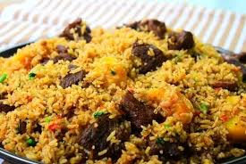
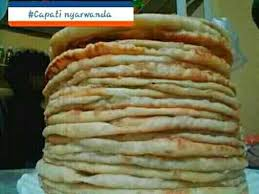
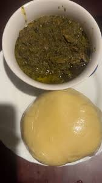
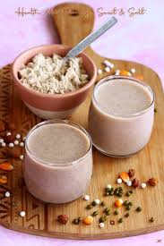

About Amarangi Food Scene
Amarangiis Kigali's most vibrant neighborhood and the ultimate destination for street food lovers. From pilourice to crispy cappatti and parridge, this area comes alive at night with food stalls and local eateries.
🍖 Popular Foods in Mumarangi
- rices - pilou rice and otners
- cappatti -Plain Chapati,Whole Wheat Chapati,...
- porridge with chocolate -different quantities
- Ugali & Isombe - Traditional cassava meal
📍 Best Food Spots in Nyamirambo
- Green Corner - Famous for eating and drinking
- Nyamirambo Women's Center Cafe - Traditional Rwandan meals
- Street Grill Stalls - Evening food vendors near the mosque
- Bourbon Coffee - Great coffee and light meals



